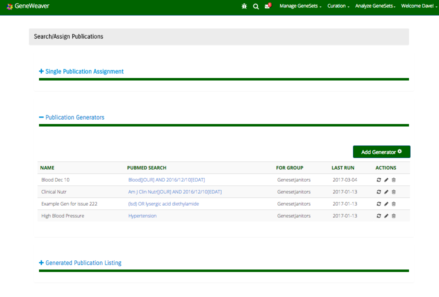

Curation Guide
The Curation menu in GeneWeaver provides options for managing curation tasks and searching and assigning publications
Managing Curation Tasks

When selecting “Manage Curation Tasks” from the navigation menu you’ll be presented with a page containing in the side bar, all of the curation groups you belong to separated by groups you administer and groups of which you are just a member. The main body of the page will contain the list of curation tasks for the selected group in the side bar. The curation tasks are a mix of publications and genesets, which have been assigned to this group, with the tasks, which have not yet been assigned to a curator, appearing at the top of the table.
You can change the selected group in the main part of the page just by clicking on the group of interest in the side bar.
Immediately above the table, there are buttons which will allow you to filter the contents of the table to contain: All results, Assigned tasks, Unassigned tasks, tasks which are Ready for review and tasks which have been Reviewed. In this context Assigned and Unassigned are referring to curator assignment.
The columns of the table are mostly self-explanatory, however it’s worth explaining PUB ASSIGNMENT and # GENESETS.
The PUB ASSIGNMENT column will display the associated PubMed ID for a geneset task, when it was entered via an association when a Publication Assignment. The link on the PubMed ID will take you to the publication assignments page.
The # GENESETS column indicates for a publication, how many genesets are associated with it as part of this specific publication assignment. If this publication is assigned to another curation group as well, genesets as part of that publication Assignment will not be part of this number.
If you are an administrator of the curation group for which you are managing tasks, there should also be an Assign Curator button at the top right of the page. You are able to select one or more task rows in the table, at which point they should be highlighted yellow.
One note about how row selection works: There are no Shift or Control operations for selecting multiple rows. Rows are selected one at a time, and remain selected until you click on the row again, when it becomes deselected. Also, selections do not persist when you move to the next page of results. This latter issue is something we intend to address in a future release. However, for the time being it’s recommended you select the visible rows you would like to assign, assign them, and then move onto the next page of results.
Once you’ve chosen the tasks you want to assign (or reassign), you will select the Assign Curator button.
You will then be presented with a modal dialog box, where you can select the individual you wish to curate the tasks, and include a note regarding the curation assignment.
Once a curator has been selected, click the Assign For Curation button. If you select Close instead no assignment will be made.
For your convenience, if you realized while in the Curation Task Management page that you want to assign a publication to this group, so that you can subsequently assign it to a curator, there is also an Add Publication button at the top of the page.
This button will take you to the Search/Assign Publications page with only publication generators listed that were created for the curation group.

Search/Assign Publications
When selecting “Search/Assign Publications” from the page menu you’ll be presented with a page containing an “accordion” display, with the middle section opened by default. The assumption is that most times the user will be interested in generating a list of publications from which to make assignments.
The section is broken into 3 parts:
- Single Publication Assignment
- Publication Generators
- Generated Publication Listing
Single Publication Assignment
If you select the + symbol next to Single Publication Assignment you will be presented with a simple search box. This would be used in the case where you have a specific PubMed ID that you know and want to assign for curation. You simply enter the PubMed ID and select the Find Publication button.
Assuming you’ve entered a valid PubMed ID, the citation will be returned so that you can confirm that this is indeed your publication of interest.
To assign the publication to a curation group to work on, just select the Assign To Curation Group button and you will be presented with the following modal dialog box displaying a drop down so you can select the curation group and a text box so that you can enter any curation notes you might have.
Publication Generation
If you select the + symbol next to Publication Generators you will be presented with a table of generators that have been created for groups of which you are a member, and an Add Generator button.
The columns of the table represent: the NAME that was assigned to the generator when it was queried; the PUBMED SEARCH term that is used to search PubMed and bring back a list of publications; FOR GROUP which is the curation group for which the generator was created; the date the generator was LAST RUN; and a series of ACTIONS which can be executed on a generator (will discuss these later).
In the case where there are no generators already created for any of the groups to which you belong, the first step would be to click Add Generator. This will bring up a modal dialog box
You will be presented with three fields, which are all mandatory in order to have the Save button enabled. Generator Name is a self selected name to represent your generator. PubMed Query must be a valid PubMed search term. You can learn more about valid PubMed terms using the following YouTube video (https://www.youtube.com/watch?v=dncRQ1cobdc&feature=relmfu). There is also a link to the PubMed search string builder (https://www.ncbi.nlm.nih.gov/pubmed/advanced) directly in the dialog box.
Once created the generator becomes available in the table of generators.
Generator Actions
There are three actions available to be used with generators:
- Run
- Edit
- Delete
We’ll discuss Run last as it’s most involved and leads to the next section.
Edit is fairly straight forward. It presents you with a modal dialog identical to the one you get when creating a new generator. You are able to update any of name, search term or group association.
Delete will simply bring up a confirmation dialog box.

Lastly the Run option will cause the generator to run against PubMed, automatically collapse the Publication Generators accordion section and will expand the Generated Publication Listing section, with the results of the generator displayed.
Generated Publication Listing
If you select the + symbol next to Generated Publication Listing you will be presented with a table of publications that have been pulled from PubMed and are the result of the PubMed search term associated with a given generator. This section is populated by selecting the Run icon in the generator table.
Publications that are pulled by a publication generator are not persisted in the GeneWeaver database. At least, not until the time they are assigned to a curation group. Instead the publications that are not already assigned to a group are pulled directly from PubMed at the time of generation. Some of these queries can result in a very large number of publications (hundreds of thousands). Therefore we only display a slice of the publications at a time. We do keep track of the total number that match the search term, and allow you to page through the results, each time going back out to PubMed to pull in the next set.
Similar to the Curation Task Management page, you can select multiple rows to be assigned to a curation group all at once. This is done by individually selecting each publication of interest. There are no features for multi select all at once using either the control or shift keys. The only way you can de-select a row, is by clicking the row again.
You can get more detail about a publication by clicking the + symbol at the beginning of the row. This will display the title, authors, journal and publication date, a link to the full text of the publication and the abstract.
Once you’ve selected the publication or publications that you would like to assign to a curation group, you select the Assign to Curation Group button. This will bring up a modal dialog box where you will select a curation group, and optionally type in a note regarding the curation that is to be done.
Once assigned the publications that have been assigned to a curation group should now have a View icon appearing at the end of the row, and if you cursor over the icon you will see a tool tip telling you what group or groups are curating this publication.
Also, if you select the + symbol at the beginning of the row now, the groups will be listed under Assigned to Curation Groups under the expanded details.
Once an assignment has been done a notification will be sent to the administrator of the curation group so they know that there is a new publication that needs to be assigned to a curator. Notifications will be discussed in another section. If you now return the the Manage Curation Tasks page for the curation group to which the publication has been assigned, you should now see the publication listed at the top of the tasks table.
Publication Curation Assignment
You can get to the Publication Curation Assignment page from the Curation Task Management page in one of two ways.
- Click on the PubMed ID in the TASK column of a publication row of the task table.
- Click on the PubMed ID in the PUB ASSIGNMENT column of a geneset row of the task table.

If you select a publication that has not been assigned to a curator yet, you’ll get to a page that looks something like this:
The citation information is present, and the curation group is identified, but there is no curator assigned and no associated genesets.
Assignment to a curator could have been done via the Curation Task Management page as detailed previously, or by using the Assign To Curator button on this page. The functionality of that button is essentially the same as on the other page, with an option to select a curator, and include a curation note.
Once the curator is assigned, the curator’s name and any notes that have been entered will appear in the upper right hand side of the page.
As the assignee of a publication, you will be presented with an additional button below Save Notes to be used to Create New Geneset. The Reassign button that was visible to the administrator now becomes a * Mark as Complete* button.
Clicking on the Create New Geneset button brings up a dialog that allows you to enter a “stub” for one or more new genesets. A stub is essentially a placeholder for a geneset that will be more completely populated at a later time. This gives a curator the ability to quickly create a bunch of stubs while reviewing an article without having to enter the full information for each.
The curator can select the species of interest and then just enter the name, the label to be used in figures and a description. They can add multiple for this species by selecting Add Row, and when they’ve entered the information for all the geneset stubs associated with this species, they hit Submit.
When you’ve hit Submit, some automatic annotation of the geneset happens in the background. Your geneset stub will not immediately become visible under GeneSets Created For This Assignment. Instead you will see “loading…”. Once the geneset stubs are created the page will display the new geneset stubs.
Once it’s loaded the geneset stub will appear under GeneSets Created For This Assignment. It might take a while for the new geneset stub(s) to appear in the list of genesets associated with the publication assignment, since GeneWeaver is calling out to an external text annotator to annotate the geneset description and publication abstract.
If there are other genesets visible to the user that are associated with this publication, but were not created through this publication assignment, then they will show up under Other Visible GeneSets Associated With This Publication.
Once the geneset stubs have been created, the curator can click on the link for any one of the genesets, and begin curation of an actual geneset.
When curation of all of the associated genesets for this publication are complete, the curator should click the Mark as Complete button on the Publication Curation Assignment page.
Curation Page
The geneset curation page is essentially the standard view geneset details page with some of the features turned off. On this page the curator can add or remove genes from the geneset, set a threshold, edit meta content, or update the curation notes. Once the curator has finished editing the geneset they can mark is Ready for Review, which will send the geneset back to the group administrator for review. If the group has multiple administrators then the geneset will be sent to the administrator that assigned the curation task to the curator.